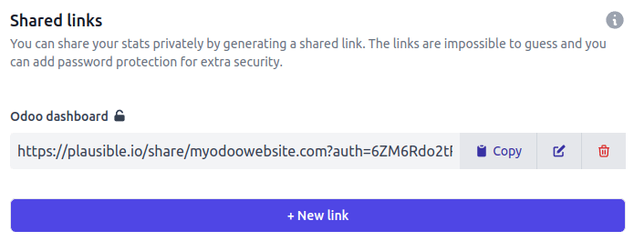

Analítica¶
La analítica del sitio web le ayuda a los propietarios a monitorear de qué forma los visitantes usan su sitio. También proporciona datos acerca del sector demográfico, comportamiento e interacciones de los visitantes, lo que ayuda a mejorar los sitios web y las estrategias de marketing.
Puede monitorear el tráfico de su sitio web de Odoo con Plausible.io o analytics/GA. Le recomendamos que use Plausible.io, pues es fácil de usar, protege su privacidad y es ligero.
El tablero analítico de Plausible también está integrado con Odoo y puede acceder a él desde .
Plausible.io¶
Odoo aloja su propio servidor de Plausible.io y proporciona una solución gratuita lista para funcionar en las bases de datos de Odoo en línea. De manera automática, Odoo crea y configura su cuenta. Para comenzar a usarlo, vaya a .
Nota
Si ya tiene una cuenta de Plausible.io y desea conectarla a su base de datos de Odoo en línea, debe crear dos ir.config.parameters para usar los servidores de Plausible.io. Para hacerlo, active el modo de desarrollador y vaya a . Haga clic en Nuevo y complete los campos Clave y Valor:
Clave |
Valor |
|---|---|
|
|
|
|
Luego, siga los pasos de a continuación para conectar su cuenta existente con los servidores de Plausible.io.
Si su base de datos está alojada en Odoo.sh o de manera local, o si desea usar su propia cuenta de Plausible.io, siga los pasos a continuación:
Cree o inicie sesión en una cuenta de Plausible usando el siguiente enlace: https://plausible.io/register.
Si va a crear una nueva cuenta, siga los pasos de registro y activación de su cuenta. Cuando le pida los detalles de su sitio web, agregue su Dominio sin incluir
www(por ejemplo,ejemplo.odoo.com) y, si es necesario, cambie la Zona horaria del reporte. Haga clic en Agregar snippet para seguir con el siguiente paso. Haga caso omiso de las instrucciones de the Agregar snippet de JavaScript y haga clic en Empezar a recolectar datos.Haga clic en el logotipo de Plausible ubicado en la parte superior izquierda de la página para acceder a su lista de sitios web y luego haga clic en el icono de engranaje que está junto al sitio web.

En la barra lateral, seleccione Visibilidad, y luego haga clic en + Nuevo enlace.
Escriba un Nombre, deje el campo de Contraseña vacío, pues no es compatible con la integración del tablero de la analítica de Plausible con Odoo. Luego haga clic en Crear enlace compartido.

Copie el enlace compartido.
En Odoo, vaya a .
En la sección SEO, active Plausible Analytics, y luego pegue el Enlace compartido y haga clic en Guardar.
Truco
Si tiene varios sitios web, agregue sus sitios web a su cuenta de Plausible.io en https://plausible.io/sites y haciendo clic en + Agregar sitio web. En Odoo, en los ajustes de Sitio web, asegúrese de seleccionar el sitio web en el campo Ajustes del sitio web antes de pegar el Enlace compartido.
Nota
Odoo dará prioridad automáticamente a dos objetivos personalizados: Generar Leads y Tienda.
Ver también
Google Analytics¶
Para llevar el seguimiento del tráfico del sitio web de Odoo con Google Analytics:
Cree o inicie sesión en su cuenta de Google usando el siguiente enlace: https://analytics.google.com.
Si está configurando Google Analytics por primera vez, haga clic en Empezar a medir y siga los pasos para crear la cuenta.
Si ya tiene una cuenta de Google Analytics, inicie sesión y haga clic en el icono de engranaje en la esquina inferior izquiera de la página para acceder a la página de Admin. Luego, haga clic en + Crear propiedad.

Siga los siguientes pasos: creación de propiedad, detalles del negocio y objetivos.
Cuando llegue al paso de Recolección de datos, elija la plataforma Web.

Configure el flujo de sus datos: Especifique la URL del sitio web y un Nombre del flujo. Luego haga clic en Crear flujo.
Copie el ID de medición.

En Odoo, vaya a .
En la sección SEO, active Google Analytics, luego pegue el ID de medición y haga clic en Guardar.
Truco
Si cuenta con varios sitios web con dominios separados, se le recomienda crear una propiedad por dominio. En Odoo, en los ajustes de Sitio web, asegúrese de seleccionar el sitio web en el campo Ajustes del sitio web antes de pegar el ID de medición.
Google Tag Manager¶
GTM es un sistema de gestión de etiquetas que le permite actualizar con facilidad códigos de medición y fragmentos de código relacionados (a los que se les conoce de forma colectiva como etiquetas) en su sitio web o aplicación móvil mediante el inyector de código.
Advertencia
Es posible que Google Tag Manager no cumpla con las regulaciones locales de protección de datos.
Consulte los siguientes pasos para usar GTM:
Vaya a https://tagmanager.google.com/ para crear o iniciar sesión en una cuenta de Google.
En la pestaña Cuentas, haga clic en Crear cuenta.
Escriba el nombre de cuenta y seleccione el país correspondiente.
Escriba la URL de su sitio web en el campo Nombre de contenedor y seleccione la plataforma objetivo.
Haga clic en Crear y acepte las condiciones del servicio.
Copie los códigos
<head>y<body>de la ventana emergente. Después, vaya a su sitio web, haga clic en Editar y diríjase a la pestaña Temas, busque la sección Ajustes del sitio web y haga clic en <head> and </body> para pegarlos según corresponda.
Nota
Los datos se recopilan de las herramientas de marketing utilizadas para monitorear el sitio web (por ejemplo, Google Analytics, Plausible, Facebook Pixel), no de Odoo.